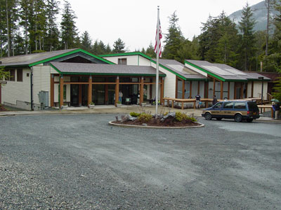
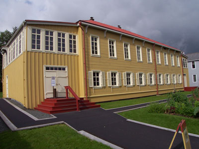
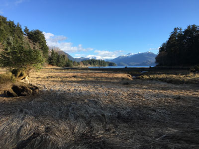

Island city featuring a scenic waterfront, rich Indigenous heritage, Russian colonial history, and access to forested landscapes and coastal wildlife.
General Information
How to Get There
From Sitka Rocky Gutierrez Airport (2 mi): Take Airport Rd across the bridge onto Sawmill Creek Rd, then follow signs into downtown toward the waterfront.
Overview
Sitka is a small city on the west coast of Baranof Island in Southeast Alaska, facing the open Pacific, and it is known as the former capital of Russian America and the site of the 1867 ceremony in which Russia transferred Alaska to the United States. Its Russian heritage is visible in the onion-domed St. Michael's Cathedral, and its Tlingit culture is celebrated in the totem poles of Sitka National Historical Park. Surrounded by volcanic peaks, islands, and the sea, Sitka offers a mix of history, wildlife, and scenery.
Visitors come to Sitka for the historic park and its totem poles, for St. Michael's Cathedral and the Russian Bishop's House, and for the Alaska Raptor Center. They also come for whale watching and sea otter tours, for fishing, and for the Sitka Summer Music Festival.
History
The Tlingit Kiks.adi clan lived at Sheet'ka for thousands of years, and in 1799 the Russian-American Company, led by Alexander Baranov, built a fort and settlement here. In 1802, Tlingit warriors destroyed it, and in 1804 Baranov returned with a Russian warship and defeated the Tlingit in the Battle of Sitka, founding New Archangel, the capital of Russian America. On October 18, 1867, the Russian flag was lowered on Castle Hill and the American flag raised after the Alaska Purchase. Sitka remained the capital until 1906, when it moved to Juneau.
Sightseeing and Popular Landmarks
St. Michael's Cathedral, a Russian Orthodox church built in 1848 and rebuilt after a 1966 fire, stands in the center of town, and the Russian Bishop's House, built in 1842, is one of the few remaining Russian colonial buildings in America. Castle Hill, where the transfer took place, has views over the harbor, and the Sitka National Historical Park has a trail with totem poles through a coastal forest, on the site of the Battle of 1804. The Sheet'ka Kwaan Naa Kahidi Tlingit community house offers performances.
Culture and Museums
The Sitka Historical Museum has exhibits on the Russian, Tlingit, and American eras, and the Sheldon Jackson Museum, the oldest museum in Alaska, shows Native artifacts. The Alaska Raptor Center rehabilitates injured eagles and other birds of prey, and the Sitka Summer Music Festival has chamber music concerts in June. Sitka also hosts the Alaska Day Festival each October.
Parks
Sitka has a number of trails and parks. The Sitka National Historical Park has a coastal trail, and Mount Verstovia and Harbor Mountain offer hikes with views of the sound. Sitka Sound has humpback whales, sea otters, and sea lions, and fishing for salmon and halibut is popular. Tongass National Forest surrounds the city, and Mount Edgecumbe, a dormant volcano, stands across the sound.
Seasons and Weather
Sitka has a temperate rainforest climate. Summers are mild, with highs in the 60s°F, and winters are mild, with highs in the 40s°F and about 35 inches of snow, and rain is frequent, about 90 inches a year. Summer is the busiest season, and visitors should be prepared for rain.
This article uses material from Wikipedia as well as information from official tourism and institutional sources. Key references include Visit Sitka, National Park Service Sitka National Historical Park, Alaska Raptor Center, Travel Alaska, and National Weather Service Juneau. Wikipedia material is from the article "Sitka, Alaska", and is available under the Creative Commons Attribution-Share-Alike License 3.0.
Featured Locations and Trails

Bob Keefer, CC BY 2.0, via Wikimedia Commons; Image Size Adjusted

Alaska Raptor Center
Wildlife rehabilitation facility featuring habitats and educational exhibits where visitors can observe eagles, owls, and other birds of prey up close.

Ethan Reitz, CC BY 2.0, via Wikimedia Commons; Image Size Adjusted

Castle Hill
Historic hilltop landmark featuring interpretive displays and panoramic views from the site where Alaska was transferred from Russia to the United States.

The original uploader was Lordkinbote at English Wikipedia., CC BY-SA 2.5, via Wikimedia Commons; Image Size Adjusted

Russian Bishops House
Restored 19th-century log building showcasing Russian colonial architecture, historic rooms, and exhibits on early Orthodox missionary life.
Ethan Reitz, CC BY 2.0, via Wikimedia Commons; Image Size Adjusted
Sheetka Kwaan Naa Kahida
Modern tribal community house modeled after a traditional clan structure that hosts cultural performances, storytelling, and Native art displays.

Ethan Reitz, CC BY 2.0, via Wikimedia Commons; Image Size Adjusted
Sitka Historical Museum
Museum showcasing artifacts, photographs, and exhibits that highlight Indigenous, Russian, and American influences on regional history.

NPS Natural Resources, Public domain, via Wikimedia Commons; Image Size Adjusted
.jpg){kind=link}
Sitka National Historic Park
Coastal park featuring rainforest trails lined with totem poles, historic battle sites, and exhibits highlighting Indigenous and Russian heritage.

Robert Pernett, CC BY 2.0, via Wikimedia Commons; Image Size Adjusted

St. Michaels Cathedral
Historic Russian Orthodox cathedral featuring distinctive green onion domes and preserved religious icons reflecting early colonial influence.